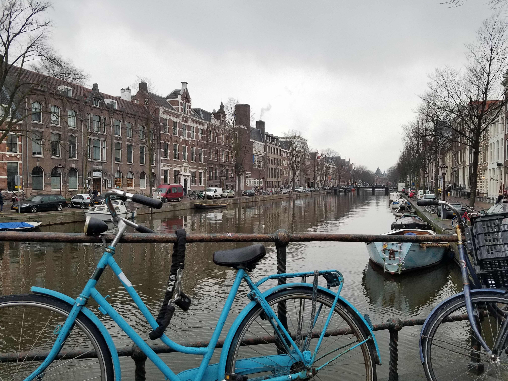
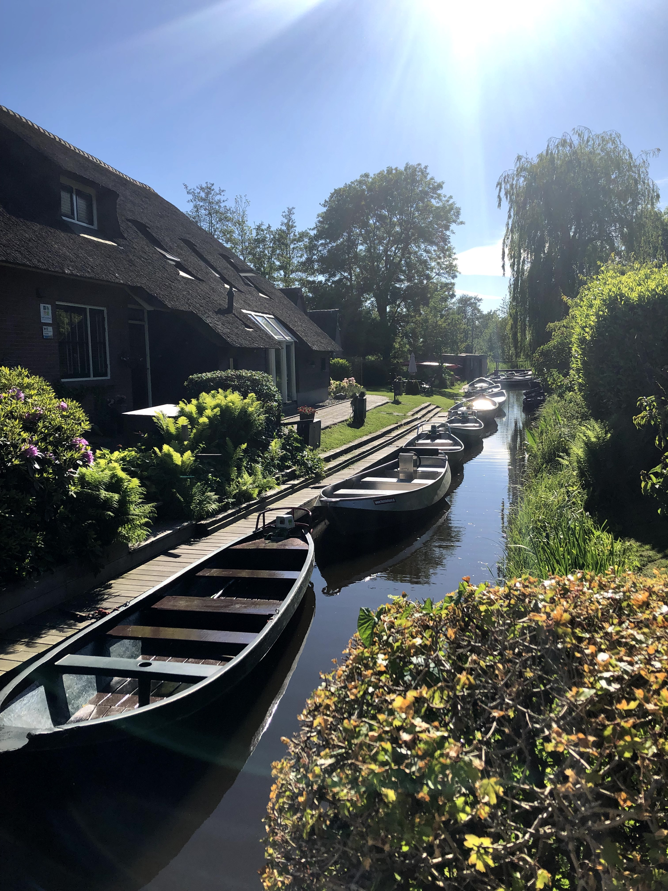
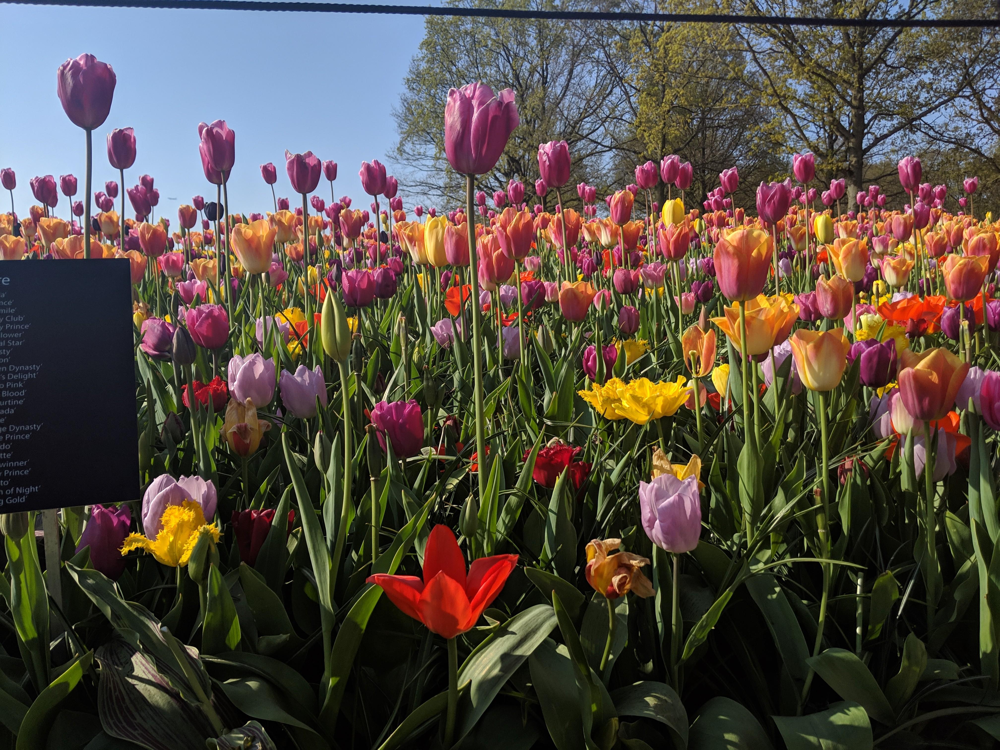
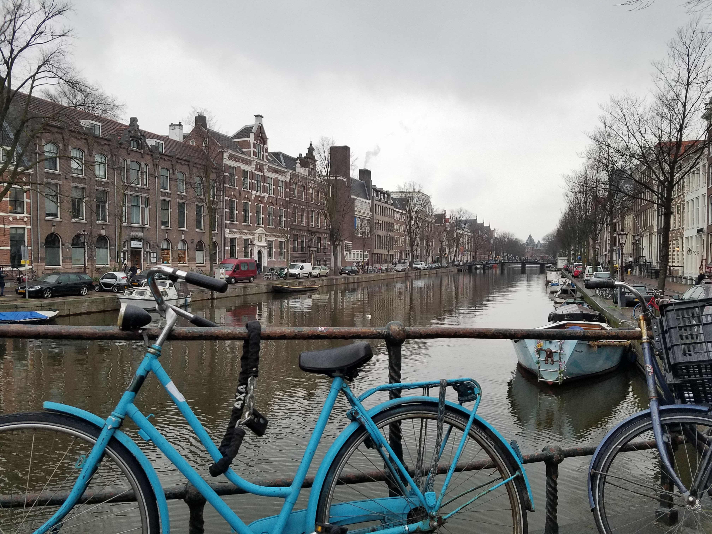
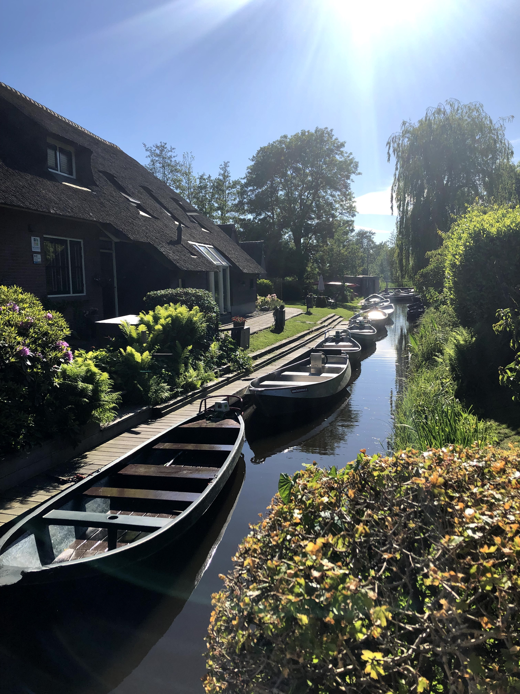
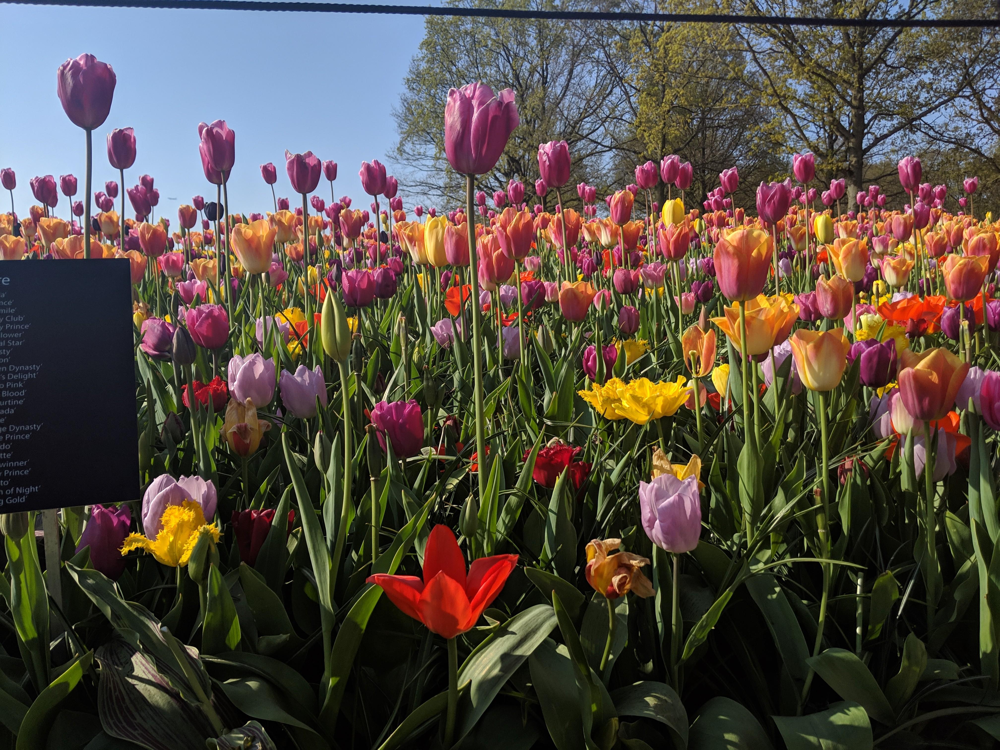

Dates
February-May 2019
Classes
Diversity 1
Diversity 2
Contemporary Social and Political Philosophy
Cooperation and Competition
Dutch History
I spent the spring of my junior year studying abroad in Amsterdam, the Netherlands. I took several classes at the Vrije Universiteit (VU) that I will be creating a humanities concentration out of. While the official language in the Netherlands is Dutch, the classes I took were in English and were comprised of mostly native Dutch students with a few international students (especially in Dutch History). The school system and class structure is a bit different, and most notably there is a lot more independence expected of the students. Assignments mostly involved reading long (although highly engaging) academic papers, and there was an expectation that students would do the reading and come to class prepared to discuss and connect to the lecture. I found that the students often had very strong opinions and were always willing to have an academic discussion surrounding differing views on an issue. There were very few assignments given and most of any one course’ grade was weighted on a final exam at the end of the term.
DIVERSITY 1 AND 2
Two consecutive courses aimed at several disciplines including: sociology, anthropology, communication sciences, public administration, and political sciences (as well as exchange students). I was one of only a few students with a non-humanities background. This didn’t pose a challenge at all in group discussions as I found that doing the readings and coming with well-supported ideas and a willingness to learn was all I needed. My background in fact allowed me to bring something entirely unexpected to our research groups.
During the first course, Diversity 1, we learned about the complexities of diversity issues and how they relate to language, perceptions, definitions, power, and politics. We discussed cases of challenging, changing, and often times contradictory issues rooted in processes of in- and exclusion as well as equality and (relative) advantage. In small group sessions, we focused on researching a particular topic. Because we needed to provide a discipline-based perspective on the issue, I proposed the topic of gentrification. Together, we researched and discussed this issue, narrowing the topic to "How is Gentrification Responsible for Displacing Already Marginalized Communities?", a topic I was very excited to learn more about coming from the background of a discipline that is often doing more harm than good in this area. We compiled our initial research into a poster that a subset then continued working on in the next session (I was moved to a new group the following session to spread out the distribution of international students).
During the second course, Diversity 2, we built on our studies of diversity issues to look at how such issues are or should be addressed in practice. Specifically, we reflected on the following central questions:
1. How is diversity accommodated in a given society or organization?
2. What is problematic in current approaches?
3. What are possible interventions? What are the alternatives? How can we build other futures?
As we learned through many case studies, interventions in the issues of diversity are anything but straightforward, and can even have unwanted consequences if executed without proper understanding. In our small groups we worked to build on the previously chosen issue and develop a well-researched potential intervention based on a thorough and critical analysis of the problem. My new group looked at the issue of gender diversity in the financial sector, which we narrowed to the lack of women in executive positions in finance. Specifically, we came up with a proposed intervention for ING Group, a Dutch banking company, considering they had made previous failed attempts at trying to tackle this issue themselves.
CONTEMPORARY SOCIAL AND POLITICAL PHILOSOPHY
A third year course for sociology, cultural anthropology, and political science majors. This class was mostly comprised of native Dutch students, so my unique background as an American and as an engineering major allowed me to both provide an entirely new perspective as well as learn a lot from the diverse backgrounds of my classmates.
Starting with an introduction to the foundational debates on the notion of ‘justice’ in normative theory (universalism versus relativism, deontology versus consequentialism, monism versus value pluralism), the course then focused on the following contested issues both on a national (based in the Netherlands) and international level:
1. Cultural diversity and moral universalism: How to reconcile the claim of 'universal human rights' with the fact of and demand for cultural, ethnic and religious diversity and collective rights?
2. Social equality: What is a 'fair' and 'just' distribution of socio-economic goods?
3. Democracy: What are the challenges of (neoliberal) globalization and populism to the idea of democracy?
Weekly assignments consisted of reading research papers in the disciplines of sociology, anthropology, or political science. Class times were spent with lecturers (frequently guest lecturers speaking on their own topic) and class discussions of the underlying ethics and implications of these theories.
Within this course I wrote an Op-Ed I titled "Feminism: Western Meddling or Honorable Crusade?" for an assignment where “the student takes a position in a contemporary public discussion within one of the themes of this course (cultural diversity, social inequality or democracy)” I chose to focus on the intersection of cultural relativism and Western feminist principles and how these can be reconciled with local cultural values.
COOPERATION AND COMPETITION
This course is best described with an excerpt from the syllabus:
“Humans are ultra-social. We are constantly interacting with other individuals and groups. Often during these interactions people can find that their immediate self interest is at odds with what is best for their relationships, family, work organizations, community , nation, and species. How we resolve these motivational conflicts is a central issue in the study of human conflict and cooperation. This course will cover theories and research on human cooperation. In so doing, we will examine several different perspectives on human cooperation (e.g., evolution, cultural theory, and interdependence theory) and review research on the factors that influence cooperation (e.g., communication, incentives, motives, and trust). The study of human cooperation has several practical implications, e.g. how to reduce conflict in marriages, what are the most effective ways to manage work groups, what can governments do to encourage corporations to engage in environmentally friendly behaviors, and what strategies can reduce international conflict, to name a few. This course will address both theoretical and practical implications of research on human cooperation.”
This course was heavily based on information gathered through research studies and academic papers and connecting major trends and conclusions to larger theories in social psychology. These theories were then translated to a practical setting that provided case studies for how to apply this research in the real world. This class unfortunately did not have any assignments apart from the final exam, but I gained a strong basis of understanding that I can apply in real-life applications in the workplace as well as in my interpersonal relationships.
IMAGINING THE DUTCH: THEMES IN DUTCH HISTORY
This class was entirely composed of international students from all around the world taking classes at VU for the semester. An emphasis was put on learning Dutch history, but also making connections to modern Dutch culture and tradition. Major themes throughout the course included images of Dutch identity in modern media, notions of ‘tolerance’, and constructed traditions. Almost all lectures were taught by guest speakers that had extensively researched and published papers in their given field. Some of these topics included the Dutch Golden Age, maritime culture and trade, Dutch waterworks and flooding, and the role of the Dutch in WWII.
Different from other history classes I’ve taken, our instructors encouraged us to be very critical of historical accounts and to analyze the difference between observed culture and nationally-constructed culture (how others see them vs. how they want to be seen). This made the course very engaging and allowed me to apply my understandings from social psychology dynamics (Cooperation and Competition), constructed group identities (Diversity), and underlying national philosophy (Contemporary Social and Political Philosophy) in understanding the trends and choices made within the nation over the course of its development.
Thank you for reading this far. Please enjoy these photos I took of some of the many beautiful spots in Amsterdam and sourrounding cities.
 




